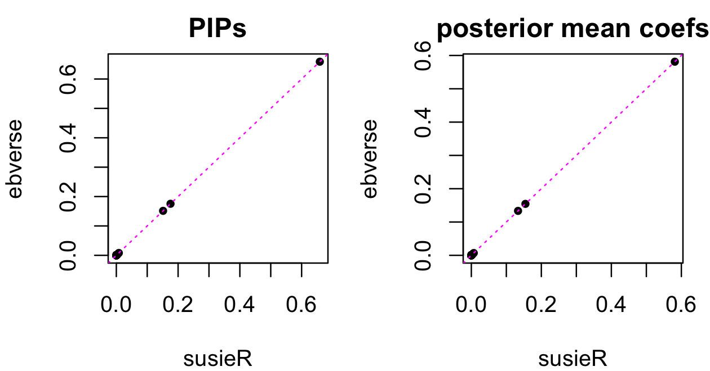

SuSiE: design and implementation
Peter Carbonetto
Last updated: 2026-11-11
Checks: 6 1
Knit directory:
ebverse-workflowr/analysis/
This reproducible R Markdown analysis was created with workflowr (version 1.7.1). The Checks tab describes the reproducibility checks that were applied when the results were created. The Past versions tab lists the development history.
The R Markdown file has unstaged changes. To know which version of
the R Markdown file created these results, you’ll want to first commit
it to the Git repo. If you’re still working on the analysis, you can
ignore this warning. When you’re finished, you can run
wflow_publish to commit the R Markdown file and build the
HTML.
Great job! The global environment was empty. Objects defined in the global environment can affect the analysis in your R Markdown file in unknown ways. For reproduciblity it’s best to always run the code in an empty environment.
The command set.seed(1) was run prior to running the
code in the R Markdown file. Setting a seed ensures that any results
that rely on randomness, e.g. subsampling or permutations, are
reproducible.
Great job! Recording the operating system, R version, and package versions is critical for reproducibility.
Nice! There were no cached chunks for this analysis, so you can be confident that you successfully produced the results during this run.
Great job! Using relative paths to the files within your workflowr project makes it easier to run your code on other machines.
Great! You are using Git for version control. Tracking code development and connecting the code version to the results is critical for reproducibility.
The results in this page were generated with repository version 7967f81. See the Past versions tab to see a history of the changes made to the R Markdown and HTML files.
Note that you need to be careful to ensure that all relevant files for
the analysis have been committed to Git prior to generating the results
(you can use wflow_publish or
wflow_git_commit). workflowr only checks the R Markdown
file, but you know if there are other scripts or data files that it
depends on. Below is the status of the Git repository when the results
were generated:
Unstaged changes:
Modified: analysis/ser_demo.Rmd
Note that any generated files, e.g. HTML, png, CSS, etc., are not included in this status report because it is ok for generated content to have uncommitted changes.
These are the previous versions of the repository in which changes were
made to the R Markdown (analysis/ser_demo.Rmd) and HTML
(docs/ser_demo.html) files. If you’ve configured a remote
Git repository (see ?wflow_git_remote), click on the
hyperlinks in the table below to view the files as they were in that
past version.
| File | Version | Author | Date | Message |
|---|---|---|---|---|
| Rmd | 7967f81 | Peter Carbonetto | 2026-11-04 | Updated the init_susie_model() call. |
| Rmd | 3a45582 | Peter Carbonetto | 2026-11-04 | Incorporating susie into the ser_demo. |
| Rmd | 60184bc | Peter Carbonetto | 2026-10-29 | Made use of the prepare_ser_data() function. |
| Rmd | 7ff5ff3 | Peter Carbonetto | 2026-10-29 | Added re-fitting of ser model to ser_demo. |
| Rmd | 76a4b32 | Peter Carbonetto | 2026-10-27 | Updated the ser demo to estimate s0. |
| Rmd | c9bc0f1 | Peter Carbonetto | 2026-10-23 | Tested the prior variance update for the SER model. |
| html | 753ca92 | Peter Carbonetto | 2026-10-23 | Ran wflow_publish("ser_demo.Rmd"). |
| Rmd | 9128c04 | Peter Carbonetto | 2026-10-23 | wflow_publish("ser_demo.Rmd", verbose = T, view = F) |
| Rmd | bb58c12 | Peter Carbonetto | 2026-10-23 | Added a basic comparison of the ebverse SER implementation to susieR with L = 1. |
| Rmd | 92030cc | Peter Carbonetto | 2026-10-22 | Small fix to ser_demo.Rmd. |
| Rmd | 2fa8c8b | Peter Carbonetto | 2026-10-22 | Added susie results with L = 1 to ser_demo workflowr. |
| html | c91b016 | Peter Carbonetto | 2026-10-22 | First build of the ser_demo workflowr. |
| Rmd | afa3972 | Peter Carbonetto | 2026-10-22 | workflowr::wflow_publish("ser_demo.Rmd") |
| html | 90487e4 | Peter Carbonetto | 2026-10-22 | Build site. |
| Rmd | efc659e | Peter Carbonetto | 2026-10-22 | workflowr::wflow_publish("ser_demo.Rmd") |
Add text here.
Load the susieR and ebverse packages:
# library(susieR)
# library(ebverse)Set the seed to ensure that the results are reproducible:
set.seed(1)Add text here.
load(file.path(system.file(package="ebverse"),"datasets/jsm_data.RData"))
n <- nrow(X)
J <- ncol(X)
dim(X)
# [1] 574 740Single effect regression
Fit a single effect regression using the susieR package:
fit_susie <- susie(X,y,L = 1,standardize = FALSE)
# [1] -712.1
# [1] -687.1
# [1] -687.1Add text here.
par(mar = c(4,4,2,1))
pips <- fit_susie$pip
plot(pips,pch = 20,xlab = "SNP",ylab = "PIP")
j <- fit_susie$sets$cs[[1]]
points(j,pips[j],pch = 1,col = "dodgerblue",cex = 1.25)
j <- which(b_true != 0)
points(j,pips[j],pch = 20,col = "red")
| Version | Author | Date |
|---|---|---|
| 753ca92 | Peter Carbonetto | 2026-10-23 |
Add text here.
X <- scale(X,center = TRUE,scale = FALSE)
y <- drop(scale(y,center = TRUE,scale = FALSE))
colnames(X) <- paste0("rs",1:J)
dat <- prepare_ser_data(X = X,y = y,residual_variance = fit_susie$sigma2)fit0 <- init_ser_model(colnames(X),control = list(verbose = "detailed"))
fit0$control$paramtol <- 1e-12
fit0$control$maxiter <- 2
fit_ser <- fit_ser_model(fit0,dat,return_data = TRUE)
fit_ser$control$maxiter <- 100
fit_ser <- fit_ser_model(fit_ser)
# parameter tolerance is met; model fitting is stopped
# iter log-Bayes factor sigma0 d(logBF) d(sigma0)
# ---- ---------------- -------- -------- ---------
# 1 +1.509167145e+02 07.8e-01 NA -2.19e-01
# 2 +1.509309112e+02 07.8e-01 +1.4e-02 -1.07e-03
# iter log-Bayes factor sigma0 d(logBF) d(sigma0)
# ---- ---------------- -------- -------- ---------
# 1 +1.509309117e+02 07.8e-01 +0.0e+00 -6.67e-06
# 2 +1.509309117e+02 07.8e-01 +1.8e-11 -4.17e-08
# 3 +1.509309117e+02 07.8e-01 +0.0e+00 -2.61e-10
# 4 +1.509309117e+02 07.8e-01 +0.0e+00 -1.63e-12
# 5 +1.509309117e+02 07.8e-01 +0.0e+00 -1.02e-14Add text there.
pm_susie <- fit_susie$alpha * fit_susie$mu
range(fit_susie$pip - fit_ser$posterior$pip)
range(pm_susie - fit_ser$posterior$mean)
cat("susie s0:",format(fit_susie$V,digits = 8),"\n")
cat("SER s0: ",format(fit_ser$prior$prior_variance,digits = 8),"\n")
cat("susie logBF:",format(fit_susie$lbf,digits = 10),"\n")
cat("SER logBF: ",format(fit_ser$lbf,digits = 10),"\n")
# [1] -3.105e-11 1.179e-11
# [1] -1.499e-10 8.700e-12
# susie s0: 0.77969921
# SER s0: 0.77969926
# susie logBF: 150.9309227
# SER logBF: 150.9309117Add text here.
par(mar = c(4,4,2,1),mfrow = c(1,2))
plot(fit_susie$pip,fit_ser$posterior$pip,pch = 20,
xlab = "susieR",ylab = "ebverse",main = "PIPs")
abline(a = 0,b = 1,lty = "dotted",col = "magenta")
plot(pm_susie,fit_ser$posterior$mean,pch = 20,
xlab = "susieR",ylab = "ebverse",main = "posterior mean coefs")
abline(a = 0,b = 1,lty = "dotted",col = "magenta")
| Version | Author | Date |
|---|---|---|
| 753ca92 | Peter Carbonetto | 2026-10-23 |
SuSiE
Fit a single effect regression with L = 2 single effects using the susieR package:
fit_susie <- susie(X,y,L = 2,standardize = FALSE)
# [1] -662.9
# [1] -595.3
# [1] -595.3
# [1] -595.3Add text here.
par(mar = c(4,4,2,1))
pips <- fit_susie$pip
plot(pips,pch = 20,xlab = "SNP",ylab = "PIP")
j <- fit_susie$sets$cs[[1]]
points(j,pips[j],pch = 1,col = "dodgerblue",cex = 1.5)
j <- fit_susie$sets$cs[[2]]
points(j,pips[j],pch = 1,col = "darkorange",cex = 1.5)
j <- which(b_true != 0)
points(j,pips[j],pch = 20,col = "red")
Create a susie data set manually:
dat <- list(n = n,nvar = J,X = X,y = y,var_y = var(y),
ss = prepare_ser_data(X = X,y = y))
class(dat) <- c("susie_full_data","susie_data","list")Fit a SuSiE model using the new interface. Also test refitting:
fit_susie_eb <- init_susie_model(colnames(X),L = 2,
control = list(maxiter = 4,paramtol = 1e-8))
fit_susie_eb <- fit_susie_model(fit_susie_eb,dat,return_data = TRUE)
fit_susie_eb <- fit_susie_model(fit_susie_eb,dat,return_data = TRUE)
# parameter estimation tolerance is met; model fitting is stopped
# iter ELBO sigma d(ELBO) delta(b) d(pip) d(sigma)
# ---- ---------- ------- -------- -------- ------- --------
# 1 -6.796e+02 00.4717 NA 8.06e-01 9.5e-01 -5.3e-01
# 2 -6.132e+02 00.4660 +6.6e+01 8.15e-02 1.2e-01 -5.7e-03
# 3 -6.132e+02 00.4660 +2.3e-02 3.95e-03 5.3e-03 -2.0e-05
# 4 -6.132e+02 00.4660 +8.2e-07 1.30e-04 1.5e-04 8.2e-08
# iter ELBO sigma d(ELBO) delta(b) d(pip) d(sigma)
# ---- ---------- ------- -------- -------- ------- --------
# 1 -6.132e+02 00.4660 +1.9e-10 2.59e-06 2.8e-06 3.6e-09
# 2 -6.132e+02 00.4660 +2.3e-13 4.78e-08 5.1e-08 7.6e-11
# 3 -6.132e+02 00.4660 +1.1e-13 8.66e-10 9.2e-10 1.4e-12Add text here.
pm_susie <- fit_susie$alpha * fit_susie$mu
print(max(fit_susie$elbo) - fit_susie_eb$elbo)
print(fit_susie$sigma2 - fit_susie_eb$residual_variance)
print(fit_susie_eb$ser[[1]]$prior$prior_variance - fit_susie$V[1])
print(fit_susie_eb$ser[[2]]$prior$prior_variance - fit_susie$V[2])
print(range(fit_susie_eb$ser[[1]]$posterior$pip - fit_susie$alpha[1,]))
print(range(fit_susie_eb$ser[[2]]$posterior$pip - fit_susie$alpha[2,]))
print(range(fit_susie_eb$ser[[1]]$posterior$mean - pm_susie[1,]))
print(range(fit_susie_eb$ser[[2]]$posterior$mean - pm_susie[2,]))
# [1] 0.00002205
# [1] -8.538e-08
# [1] -1.261e-06
# [1] 1.451e-07
# [1] -2.734e-06 2.800e-06
# [1] -2.091e-09 2.095e-09
# [1] -2.615e-06 2.006e-06
# [1] -1.526e-07 2.353e-13TO DO: Test init_susie_model and
fit_susie_model with \(L =
1\).
sessionInfo()
# R version 4.3.3 (2024-02-29)
# Platform: aarch64-apple-darwin20 (64-bit)
# Running under: macOS 26.5.2
#
# Matrix products: default
# BLAS: /System/Library/Frameworks/Accelerate.framework/Versions/A/Frameworks/vecLib.framework/Versions/A/libBLAS.dylib
# LAPACK: /Library/Frameworks/R.framework/Versions/4.3-arm64/Resources/lib/libRlapack.dylib; LAPACK version 3.11.0
#
# locale:
# [1] en_US.UTF-8/en_US.UTF-8/en_US.UTF-8/C/en_US.UTF-8/en_US.UTF-8
#
# time zone: America/Chicago
# tzcode source: internal
#
# attached base packages:
# [1] stats graphics grDevices utils datasets methods base
#
# other attached packages:
# [1] ebverse_0.1-69 susieR_0.14.4 testthat_3.2.3 workflowr_1.7.1
#
# loaded via a namespace (and not attached):
# [1] remotes_2.4.2.1 rlang_1.1.6 magrittr_2.0.3
# [4] git2r_0.33.0 matrixStats_1.2.0 compiler_4.3.3
# [7] getPass_0.2-4 callr_3.8.0 vctrs_0.6.5
# [10] RcppZiggurat_0.1.6 stringr_1.5.1 profvis_0.4.0
# [13] pkgconfig_2.0.3 crayon_1.5.3 fastmap_1.2.0
# [16] ellipsis_0.3.2 promises_1.3.3 rmarkdown_2.29
# [19] sessioninfo_1.2.4 ps_1.9.1 purrr_1.0.4
# [22] xfun_0.52 Rfast_2.1.0 cachem_1.1.0
# [25] jsonlite_2.0.0 later_1.4.2 reshape_0.8.9
# [28] irlba_2.3.5.1 parallel_4.3.3 R6_2.6.1
# [31] bslib_0.9.0 stringi_1.8.7 RColorBrewer_1.1-3
# [34] pkgload_1.5.3 jquerylib_0.1.4 brio_1.1.5
# [37] Rcpp_1.1.0 knitr_1.50 usethis_3.2.2
# [40] httpuv_1.6.14 Matrix_1.6-5 tidyselect_1.2.1
# [43] rstudioapi_0.15.0 dichromat_2.0-0.1 yaml_2.3.10
# [46] miniUI_0.1.2 processx_3.8.6 pkgbuild_1.4.8
# [49] lattice_0.22-5 tibble_3.3.0 plyr_1.8.9
# [52] shiny_1.11.1 withr_3.0.2 evaluate_1.0.4
# [55] desc_1.4.3 RcppParallel_5.1.10 urlchecker_1.0.1
# [58] pillar_1.11.0 whisker_0.4.1 generics_0.1.4
# [61] rprojroot_2.1.1 ggplot2_3.5.2 scales_1.4.0
# [64] xtable_1.8-4 glue_1.8.0 tools_4.3.3
# [67] fs_1.6.6 grid_4.3.3 devtools_2.4.5
# [70] cli_3.6.5 mixsqp_0.3-54 dplyr_1.1.4
# [73] gtable_0.3.6 sass_0.4.10 digest_0.6.37
# [76] htmlwidgets_1.6.4 farver_2.1.2 memoise_2.0.1
# [79] htmltools_0.5.8.1 lifecycle_1.0.5 httr_1.4.7
# [82] mime_0.13